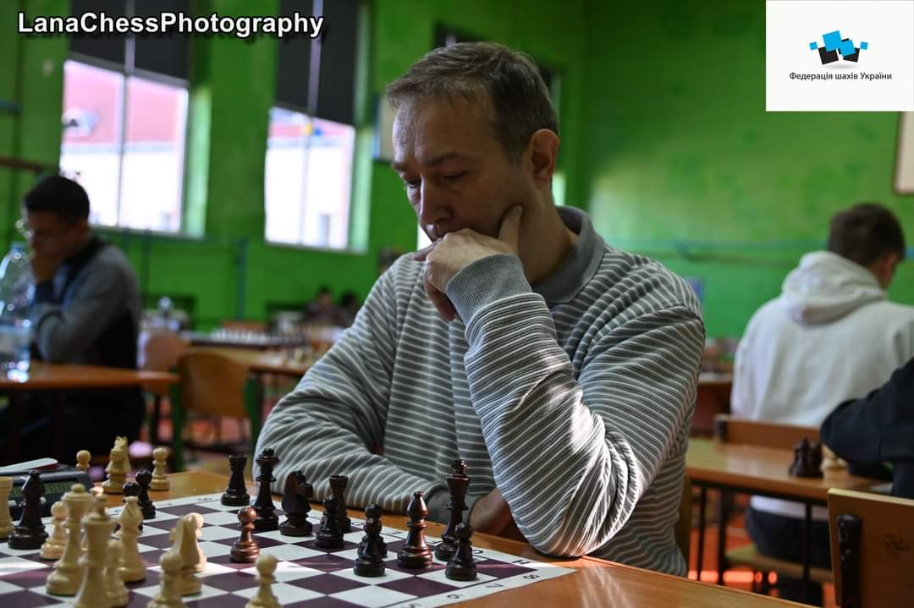
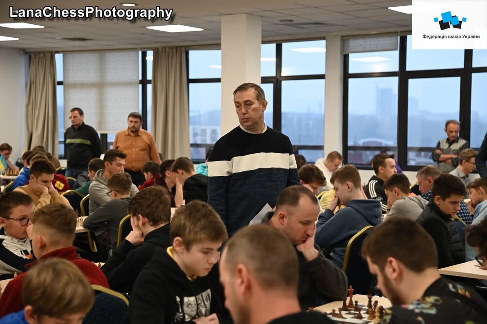

Семен Едович Найгебавер викладає шахи в ПАДІЮНі з 2010 року, та крім тренерства є активним гравцем та шаховим суддею. Семен Едович грає в шахи вже більше 40 років, має звання кандидата в майстри спорту. Є переможцем та призером чемпіонатів Закарпатської області, всеукраїнських та міжнародних турнірів. Семен є суддею першої категорії: у його скарбничці досвіду шахового судді декілька чемпіонатів України та масштабних всеукраїнських турнірів, ну і, безперечно, велика кількість вдало організованих обласних турнірів.

 Семен Найгебавер на Facebook
Семен Найгебавер на Facebook